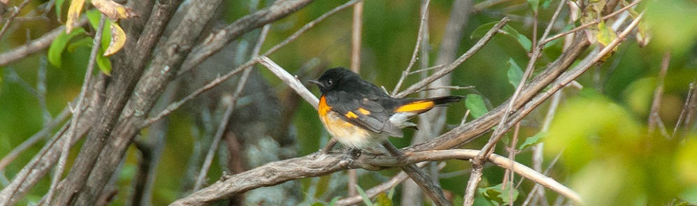

Matthew Archbell, B.Sc.
Experience
Ontario Ministry of Natural Resources and Forestry (MNRF): Fish and Wildlife Assistant
May 2019 - August 2019
- Utilized citizen science data to create maps of fish spawning areas and determine walleye spawning periods in Lake Scugog
- Monitored for invasive species (Water Soldier, European Milfoil) within the Trent-Severn Waterway
- Set up and monitored barbed-wire hair traps for bear population estimates
- Completed data management using Microsoft Office suite and ArcGIS
- Worked with OFAH to organize and supervise a volunteer event re-introducing Atlantic Salmon to the Ganaraska River
- Assisted with the Ontario Broad-scale Monitoring Program to determine fish distribution and diversity in Rice Lake and Buckhorn Lake
Bartram Woodlands: Tree Planter
May 2018 - August 2018
- Planted trees throughout southern Ontario
- Worked outdoors in a variety of conditions, including rain, heat, uneven terrain, for long hours
Fisheries and Oceans Canada (DFO): Student Fisheries Research Technician
May 2017 - September 2017
- Part of a small field crew sampling agricultural drainage systems and natural watercourses throughout southern Ontario for fish distribution and diversity and drainage classification
- Used sampling techniques including seine netting, electrofishing and dip netting, as well as conducted YSI water quality and Secchi disk measurements
- Completed data input using Microsoft Excel and ArcGIS
Algonquin Park, OPS North (MECP): Interior Ranger
May 2016 - August 2016
- Maintained interior portages, trails, and campsites, accessing remote areas by canoe, motorboat, pickup truck, and bush plane
- gained working knowledge of ontario fishjing regulations
- Worked outdoors in a variety of conditions, including rain, heat, uneven terrain, for long hours
Education
Fleming College: Geographic Information Systems - Applications Specialist
Current
- Ontario College Graduate Certificate
University of Guelph: Wildlife Biology and Conservation
2015 to 2019
- B.Sc. Honours Degree with focus on zoological and ecological studies
- Completed Oceanography field course with a focus on marine biology in conjunction with the Huntsman Marine Science Centre in St. Andrews, New Brunswick
- Experience in chemical, biological, and botanical labs
- Member of University of Guelph Wildlife Club
- GIS and Spatial Analysis course provided baseline GIS experience
Nantyr Shores Secondary School: High School Diploma
2014
- Specialist High Skills Major in Environmental Studies
- Town of Innisfil Leadership Award
- Valedictorian
- Ontario Scholar
Certifications
- Standard First Aid/CPR C/AED Certified
- Ontario Safe Hiker Certified
- ORCKA level 3 (tandem) Certified
- Canadian Aquaculture Institute Experimental Fish Course completion through University of PEI
- Class 2 Backpack Electrofishing Certification through DFO
References available upon request.